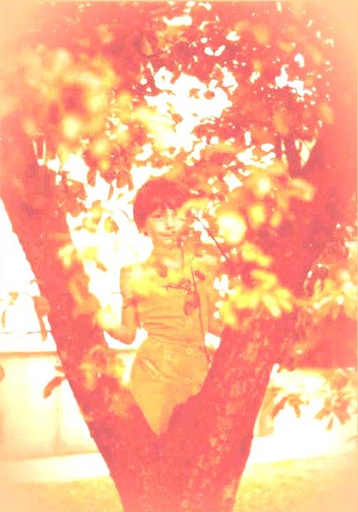

IX L'ADOLESCENTE
Elle chantait au seuil du jardin oublieux.
Sur sa gorge flottaient les parfums de l'enfance,
Mais l'horreur d'être claire illuminait ses yeux.
Les lames de la nuit emportaient ses défenses.
Passante du matin, elle écoutait des voix.
L'ombre appesantissait sa danse de lutine.
Son rire s'ocellait comme font les sous-bois.
La femme grandissait sous sa forme argentine.
Derrière elle, le bois étoilait ses appeaux,
L'anis, les lys des eaux que les ondes annellent,
Mais sur les troncs posés recueillaient le repos
Les velours somptueux des chats, vertes prunelles.
Elle chantait. Tout mai tintait dans sa chanson.
Moi je guettais, chasseur dédaigneux du suaire,
La jeune fille en chants qui payait sa rançon
Pour de l'enfance avoir quitté le sanctuaire.
Michel Galiana (c) 1991
|

|
IX THE TEENAGER
She sang on the threshold of the forgetful yard.
Childhood floated in her voice, a reminiscence.
The shine in her eyes by the rising sun was marred.
The ebb of the night had swept away her defence.
A morning passer-by, she listened to voices.
Shadow slowed down her pace as she danced like a sprite.
Her laugh, as in an undergrowth, broke in patches.
With the woman growing in her she had a fight.
On a background of woods glittering lures were dotted:
Anise, lilies on lakes that are rippled by gnats,
But here upon a heap of trunks quietly rested
The sumptuous velvet of lazy green-eyed cats.
She sang and in her song I heard all April's glee.
I watched intently, a hunter scorning to hide.
The young girl was paying in songs the tollgate fee
That has to be paid on leaving the realm of Child.
Transl. Christian Souchon 01.01.2004 (c) (r) All rights reserved
|